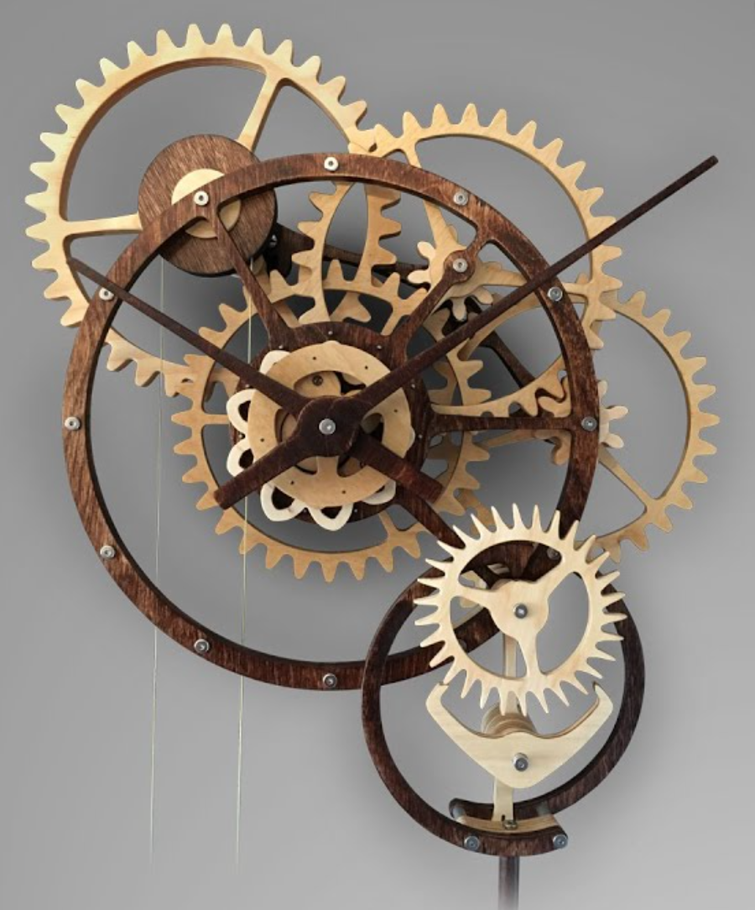
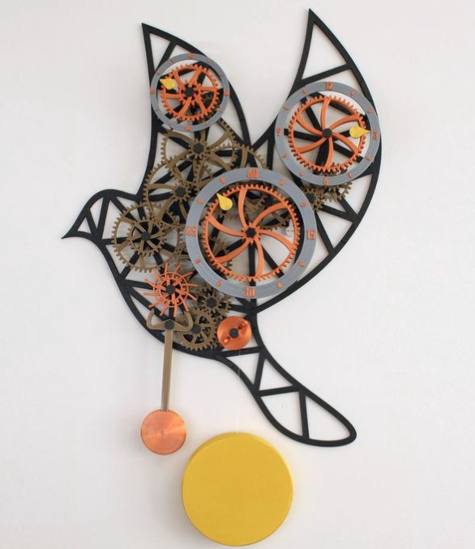

|

|

|
For my final project I would like to make a mechanical clock or gear mechanism wall decoration (if the timekeeping portion doesn’t work out), ideally with a pendulum and weight to provide power, but I might buy a motor to power the clock without needing to reset. To design the clock, I must learn about gear ratios and compound gears, since the mechanism of the hour, minute, and second hand rotations depend on each other through gears.
My clock or decoration would turn out like this; however I may change the orientation of the gears on Y and Z axis based on space. This drawing isn't what my final piece will look like! They're just possibilities.
For the gear ratios, I’ll need a 60:1 gear ratio of the minute hand (1 full rotation for 60 minutes) and a 12:1 gear ratio for the hour (1 full rotation for 12 hours). The 60:1 gear ratio is pretty big, so I broke up the ratio to 2:1, 5:1, and 6:1, and I left the 12:1 gear ratio as is.
I developed 2 possible sketches depending on the 3D orientation of my clock/mechanism. (This sketch isn’t showing the final 3D orientation.) I would have 8 or 9 gears with teeth based on the gear ratios. In the first sketch, I have 9 gears because the minute and hour hand are separate. In the second sketch the minute and hour gears are co-axial and the total number of gears is 8. The sketches also show the number of teeth each gear would have.
I want to build a mechanical clock because it’ll help me keep track of time in my apartment, and I’ve always been fascinated by automatic watches. These mechanisms don’t require battery and they rely on a spring and a weight to move gears and keep track of time (also because the parts are so small). I would love to make an automatic watch through digital fabrication but I feel like that task is too difficult for the timeframe I have and the parts of a watch movement are too small for me to fabricate and put together without special tools.
I like watches and clocks. Also, currently I don't have much decor on my walls, so I plan to put this on the wall of my apartment.
11/16 - 11/21: Brainstorm ideas
11/20 - 11/21: Research, learn about gear ratios + compound gears. Sketch initial designs
11/22 - 11/24: Browse materials in store, design parts in Rhino and Grasshopper
11/25: Buy parts at hardware store
11/28-11/29: Laser cut parts at the MILL (test and adapt)
11/30 - 12/4: Iterate + assemble everything + make adjustments
12/5 - 12/6: Documentation
12/6: Final Presentation
Plywood: $7 - $21 | ASAP | Ace or Home Depot
String: Free | I have it already | Home
Weight (flour): Free | I have it already | Home
Screws/Nuts: $5 - $10 | ASAP | Ace or Home Depot
Rotating Shaft: $5 - $10 | ASAP | Ace, Home Depot, Daiso
Total: $17 - $41
How escapement mechanisms work.
Compound Gear Trains
Gear Train Design
Building a Wooden Clock
Some notes on a clock design
Special thanks to Vanessa Chien Lai for brainstorming ideas with me for my final project!